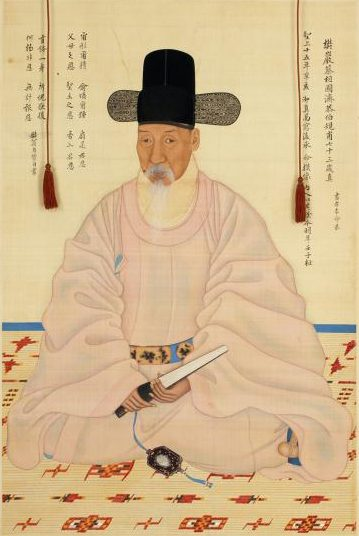
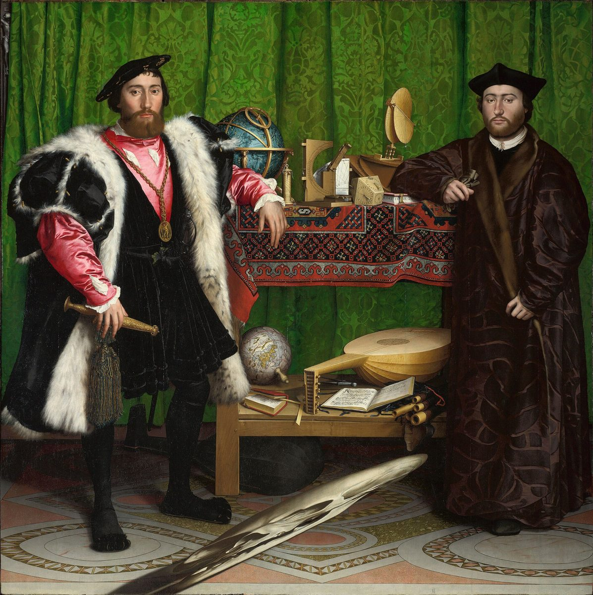
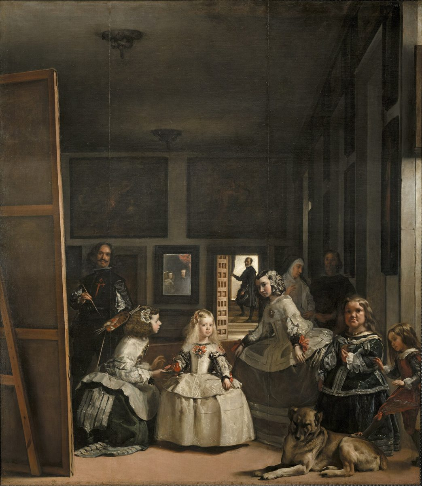
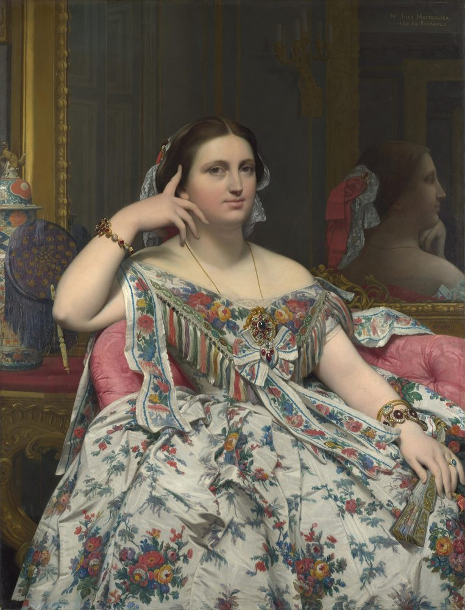
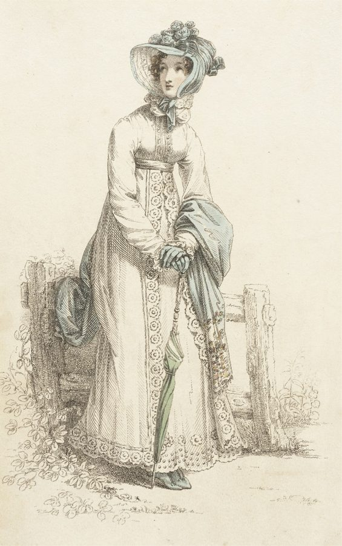
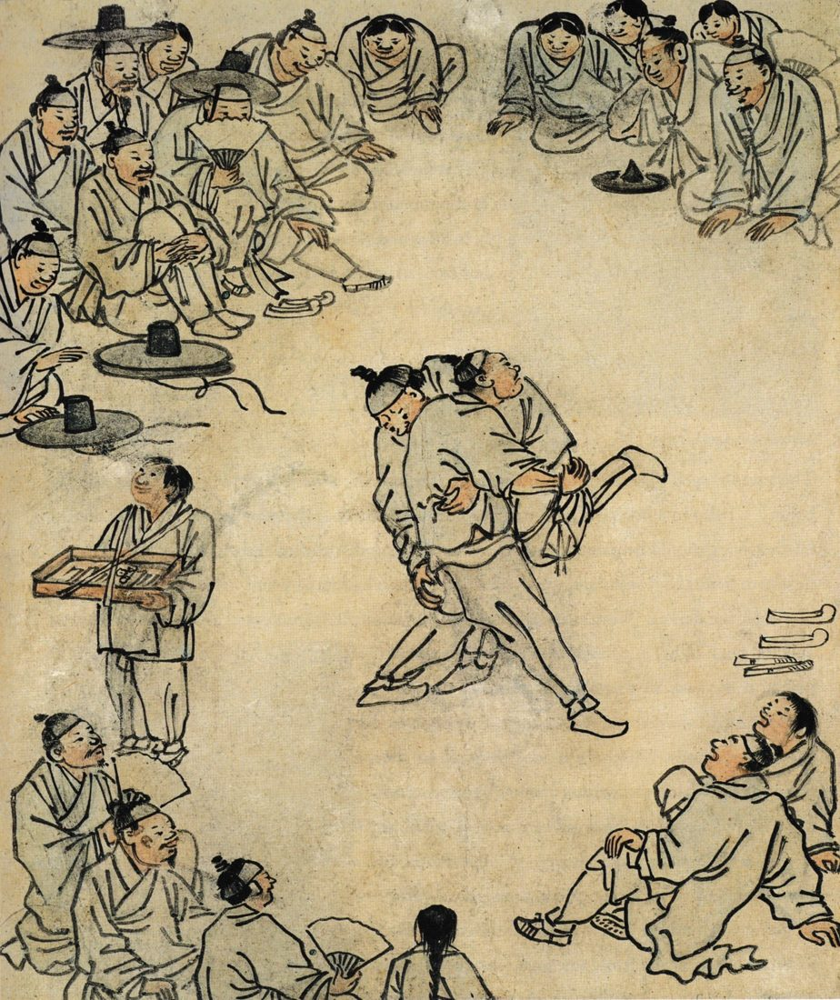
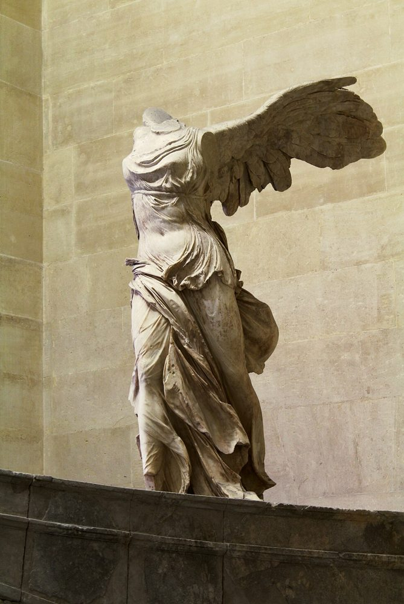
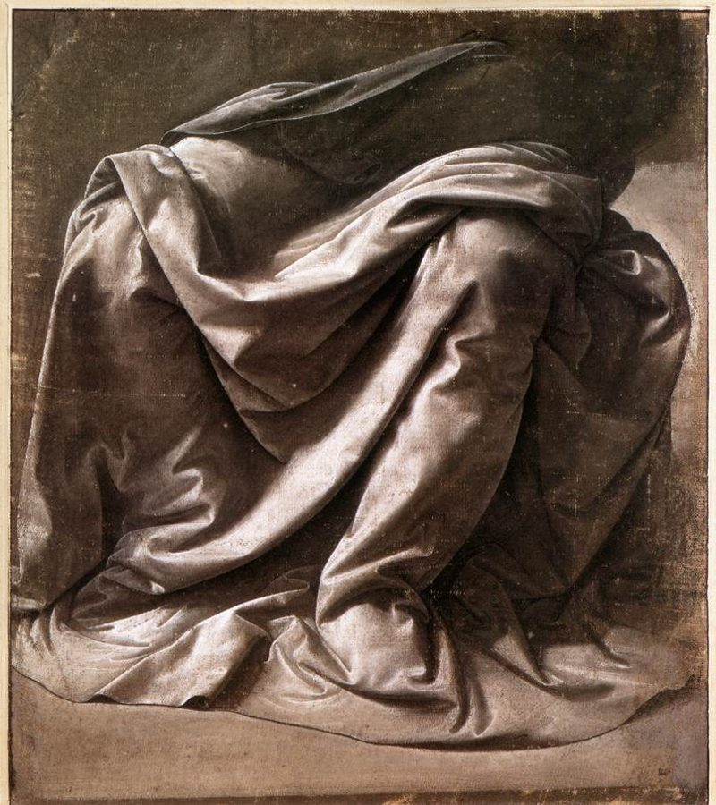
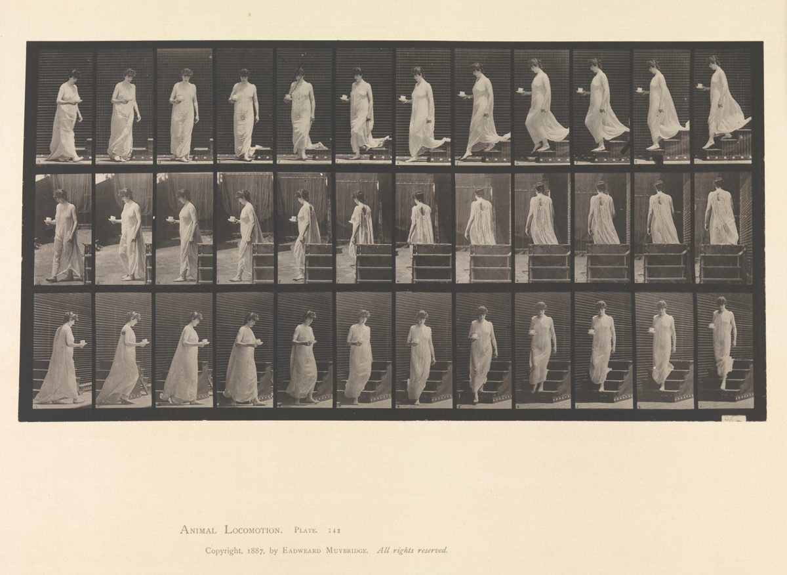

공적인 옷 — 관복 초상이명기, 〈채제공 초상 일괄〉 시복본, 1792 · 보물 제1477-1호 · 수원화성박물관
옅은 분홍 시복에 사모를 쓰고 화문석에 앉아 손에 쥘부채와 향낭을 들었다. 모자와 옷과 띠에 신분·관직을 나타내는 요소가 들어 있다. 이 그림은 글과 실물로 함께 검증되는 드문 사례이기도 하다 — 아래를 보라.
2026학년도 수능 · 영어 41~42번(장문 독해) 지문의 미술사 개념 풀이
지문은 복식사가 회화·판화·조각에 사료를 빚지고 있다고 말한다. 옷은 왜 고르게 남지 않았는가. 그 빈틈을 그림이 메운다면, 그 그림은 얼마나 믿을 수 있는가.
한광여고 미술 · 이대행

41~42.2026학년도 대학수학능력시험 · 영어 영역 · 한국교육과정평가원, 2025. 11. 13. 시행 · 문제지 원본 내려받기(EBSi 기출문제) There is an obvious problem with the history of dress in all of its displays and that is, although textiles survive from early periods and cultures of recorded history, actual garments do not provide an uninterrupted flow of evidence across the same long time-span. Therefore, to give the study of dress equal significance to other areas such as architecture, painting, prints, drawings and sculpture, it was (a) inevitable that these other areas would provide much of the source material. The history of surviving dress really only starts in the 17th century, and like all artefacts described as fine or decorative art, is a highly visual subject. However, unlike most of the categories of collection and study that make up those areas, it is fluid rather than static. Garments should be seen in (b) movement on a human body, not frozen on a display figure. This is one of the many difficulties when curating collections of costume and also why some modern writers find costume collections physically and intellectually (c) lifeless. Fortunately, in the period after 1660, when more items of dress survive to enrich our understanding of the history of the subject, there are also many painted, printed, photographed and filmed sources of evidence of people in clothing, caught in movement. Often a variety of different types of illustrative examples will (d) provide evidence about how a garment was worn within the period in which it was made. Without the information contained in art in all of its forms, from drawing to sculpture, it is (e) unlikely that displays of historic dress would be awkward imitations of the intentions of their original makers and owners.
* garment: 의복 · 41. 윗글의 제목으로 가장 적절한 것은? / 42. 밑줄 친 (a)~(e) 중에서 문맥상 낱말의 쓰임이 적절하지 않은 것은?
우리말 옮김복식사에는 그것을 전시하는 모든 방식에 걸쳐 분명한 문제가 하나 있다. 기록된 역사의 이른 시기와 여러 문화에서 직물은 남아 있지만, 실제 의복은 그 긴 시간에 걸쳐 끊기지 않는 증거의 흐름을 제공하지 못한다는 것이다. 그래서 복식 연구에 건축·회화·판화·소묘·조각 같은 다른 분야와 같은 무게를 실어 주려면, 바로 그 다른 분야들이 자료의 상당 부분을 제공하는 것이 (a) 불가피했다. 현존하는 의복의 역사는 사실상 17세기에야 시작되며, 순수미술이나 장식미술로 분류되는 모든 인공물이 그렇듯 대단히 시각적인 주제다. 다만 그 분야들을 이루는 대부분의 수집·연구 대상과 달리, 복식은 정지해 있지 않고 유동적이다. 의복은 전시용 인체 모형 위에 굳어 있는 것이 아니라 사람 몸 위에서 (b) 움직이는 상태로 보여야 한다. 이것이 복식 컬렉션을 기획할 때 부딪히는 여러 어려움 가운데 하나이고, 어떤 현대 저자들이 복식 컬렉션을 물리적으로도 지적으로도 (c) 생기가 없다고 여기는 이유이기도 하다. 다행히 1660년 이후 시기에는 복식사의 이해를 넓혀 줄 의복 실물이 더 많이 남아 있을 뿐 아니라, 옷을 입고 움직이는 순간이 포착된 회화·판화·사진·영상 자료도 많다. 서로 다른 종류의 도판 자료들이, 한 의복이 만들어진 시기에 그 옷을 어떻게 입었는지에 대한 증거를 (d) 제공해 주는 경우가 많다. 소묘에서 조각에 이르는 온갖 형태의 미술이 담고 있는 정보가 없다면, 역사 복식 전시는 원래 만든 사람과 입은 사람의 의도를 어설프게 흉내 낸 것이 될 가능성이 (e) 낮을 것이다. — 마지막 문장을 원문 그대로 옮기면 이렇게 논리가 어긋난다. 42번이 묻는 지점이 바로 여기다.
복식사 이야기지만, 실은 미술이 다른 학문의 일차 사료가 되는 경우를 설명하는 글이다. 밑줄 친 대목을 순서대로 짚고 마지막에 문제로 돌아온다.
회화와 조각은 대체로 보관을 염두에 두고 만들어진다. 옷은 사정이 다르다. 옷은 입기 위해 만들어지고, 입는 동안 마모되고, 유행이 바뀌면 뜯어서 다시 재단되기도 한다. 비단과 금사는 회수되어 다른 옷이 되고, 자수는 잘라 내어 다른 바탕에 옮겨 붙기도 한다. 값비싼 직물이라고 반드시 잘 남는 것은 아니다 — 값이 나갈수록 다시 쓰일 이유도 커지기 때문이다.
재료 자체도 약하다. 견과 모는 단백질 섬유라 빛·습기·해충에 약하고, 염료는 색이 빠지며, 땀이 닿는 겨드랑이와 목선부터 삭는다. 면과 마도 미생물에 분해된다. 도자기나 금속과 달리 직물은 썩는 물건이다.
직물이 오래 남는 곳은 대개 특수한 환경이다. 극도로 건조한 곳(이집트 무덤, 타클라마칸 사막), 산소가 차단된 습지(덴마크 청동기 참나무 관의 모직 옷), 밀봉된 무덤이 대표적이다. 이 밖에도 염분이 많은 땅, 언 땅, 금속 부장품과 닿아 광물로 치환된 직물 등이 알려져 있다. 이런 경우는 대개 우연히 조건이 맞은 것이지만, 스투레 가문의 옷처럼 사람이 뜻을 두고 보관해 온 사례도 있다.
그래서 박물관 복식 컬렉션은 덜 입은 옷 쪽으로 기울어 있다. 예복, 혼례복, 수의처럼 몇 번 입지 않고 보관된 옷들이다. 일상복, 노동복, 아이 옷, 속옷은 거의 남지 않는다. 남아 있는 옷만 보고 시대를 재구성하면 부유하고 격식 있는 쪽으로 기울어진 그림이 나온다.

실물이 없으면 남는 것은 재현이다. 초상화는 이 점에서 특수한 지위를 갖는다. 초상화의 목적 가운데 하나가 애초에 입은 사람의 지위를 보여 주는 것이었기 때문에, 옷은 배경이 아니라 그림의 주요 정보였다. 화가는 얼굴만큼이나 직물의 종류를 구별해 그려야 했다.
홀바인의 〈대사들〉에서 왼쪽 인물의 검은 벨벳과 스라소니 모피, 오른쪽 인물의 갈색 다마스크는 광택과 결이 달리 그려져 있다. 벨벳은 빛을 먹고, 새틴은 날카롭게 반사하고, 모피는 가장자리가 흐려진다 — 그 차이를 그릴 줄 아는 것이 화가의 기량이었다. 앵그르의 〈무아테시에 부인〉에서는 꽃무늬 프린트와 레이스가 견본처럼 정밀해서, 당시 직물 생산 수준까지 함께 읽힌다.
초상화가 개인의 옷을 기록했다면, 판화는 유행 자체를 기록하고 퍼뜨렸다. 18세기 프랑스의 복식 판화집과 19세기 잡지의 패션 플레이트는 옷 입은 인물을 정면·측면으로 보여 주고 옷감과 부속품의 이름을 캡션으로 달았다. 회화가 한 사람의 한 벌을 남겼다면, 판화는 한 시기의 유형을 남겼다.
패션 플레이트는 동판에 찍어 손으로 색을 칠했고, 잡지에 실려 국경을 넘어 유통됐다. 유행을 기록하는 동시에 제안하고 퍼뜨리는 매체였다는 뜻이다. 복식사가 이 자료를 다룰 때 조심하는 이유이기도 하다 — 플레이트에 실린 옷이 실제로 얼마나 입혔는지는 이 그림만으로는 알 수 없다.
지문이 "painted, printed, photographed and filmed"라고 매체를 나열한 것은 단순한 열거가 아니다. 각 매체가 남기는 정보의 층위가 다르다.


조선의 초상화는 사실 묘사를 중시한 전통으로 알려져 있다 — 터럭 한 올이라도 다르면 그 사람이 아니다(一毫不似 便是他人). 관복의 사모·단령·흉배·품대에는 착용자의 신분과 관직을 나타내는 요소가 들어 있어서, 『경국대전』·『국조오례의』 같은 문헌의 복식 규정과 대조해 볼 수 있다. 유럽의 사치금지법이 그림 속 모피를 읽는 단서이듯, 조선에서는 흉배의 짐승 종류와 띠의 재질이 비슷한 단서가 된다. 다만 어느 쪽이든 규정이 있었다는 것과 그림이 규정대로 그려졌다는 것은 다른 문제다.

옅은 분홍 시복에 사모를 쓰고 화문석에 앉아 손에 쥘부채와 향낭을 들었다. 모자와 옷과 띠에 신분·관직을 나타내는 요소가 들어 있다. 이 그림은 글과 실물로 함께 검증되는 드문 사례이기도 하다 — 아래를 보라.

초상화가 남기지 않는 것이 여기 있다. 걷어 올린 소매, 동여맨 허리, 벗어 둔 짚신, 갓을 젖혀 쓴 사람. 움직이는 몸 위의 옷이다 — 지문이 말한 "not frozen on a display figure"가 그림 안에서 이미 일어나 있다.
마지막에 "문헌·실물·그림을 겹쳐 보라"고 결론만 내는 것보다, 한 점으로 직접 해보는 편이 빠르다. 이 초상은 세 층이 모두 남아 있다.
① 그림에서 보이는 것 — 옅은 분홍 시복, 사모, 화문석, 그리고 두 손에 든 쥘부채와 향낭. 손을 굳이 옷 밖으로 꺼내 물건을 들려 놓았다.
② 글로 확인되는 것 — 화면 오른쪽 위에 채제공이 직접 쓴 자찬문이 있고, 부채와 향낭이 정조에게서 받은 것이라는 내용이 적혀 있다. 그 아래에는 화가가 이명기임을, 1791년 어진을 그린 뒤 이듬해 장황했음을 밝힌 기록이 있다. 손을 드러낸 구성이 우연이 아니라는 근거가 그림 안의 글에서 나온다.
③ 실물로 확인되는 것 — 그 향낭이 실제로 남아 있다. 초상 1점, 유지 초본 3점과 함께 향낭과 함이 하나의 보물로 지정돼 있다. 그림에 그려진 물건을 손으로 볼 수 있는 경우다.
④ 그래도 확정하기 어려운 것 — 시복 직물의 정확한 조직과 염료, 채제공이 이 옷을 평소 얼마나 입었는지, 주름과 색이 실물 그대로인지. 세 층을 겹쳐도 남는 빈칸이 있다. 교차 검증은 답을 다 채우는 작업이 아니라, 어디까지 말할 수 있는지 선을 긋는 작업이다.
지문은 "현존 의복의 역사는 사실상 17세기부터 시작된다"고 말한다. 유럽 복식 컬렉션의 사정을 요약한 문장이다. 조선에는 다른 조건이 있었다.
조선 사대부의 무덤에는 회곽묘(灰隔墓) — 관 둘레를 석회로 두껍게 싸서 굳힌 구조 — 가 많았다. 석회가 굳으며 공기와 물이 차단되고, 그 안의 옷이 수백 년을 견뎠다. 그래서 조선에서는 15~16세기 옷이 실물로 남아 있다. 단국대 석주선기념박물관은 이런 출토복식과 전세유물을 만여 점 소장하고 있고, 15세기 왕실 종친의 답호부터 조선 후기 관복까지 이어진다.
이것이 지문을 부정하는 것은 아니다. 유럽에도 앞서 본 스투레 가문의 옷처럼 16세기 실물이 남아 있고, 조선의 출토복식도 무덤에서 나온 것이라 수의와 부장복 쪽으로 기울어져 있다. 어느 쪽이든 "남아 있다 / 없다"의 문제가 아니라 무엇이 어떤 편향으로 남았는가의 문제다. 그러니 지문을 읽을 때 "어디를 기준으로 한 말인가"를 묻는 습관은 필요하다.
다만 주의. "터럭 한 올"은 얼굴 묘사에 관한 원칙으로 전해지는 말이다. 복식이 같은 기준으로 그려졌다고 단정할 수는 없고, 관복이 제도적 기호를 담는다는 점과는 구분해서 읽는 편이 안전하다.
지문의 두 번째 문제로 돌아온다. 옷은 유동적(fluid)인데 컬렉션은 옷을 정지시킨다. 마네킹 위의 드레스는 형태는 지키지만 움직임은 사라진다. 어떤 저자들이 복식 컬렉션을 "물리적으로도 지적으로도 생기가 없다(lifeless)"고 말한 이유다.
실제로 전시는 늘 타협이다. 옛 옷은 지금 사람의 몸에 맞지 않아 마네킹을 따로 깎아야 하고, 무게를 견디지 못해 눕혀 놓기도 한다. 조명을 밝히면 색이 빠지므로 어둡게 둔다. 옷을 보존하려는 조치가 옷을 가장 옷답지 않게 만든다.
옷이 움직이는 모습은 다른 자료에서 볼 수 있다. 다만 여기서부터는 무엇을 보여 주는 자료인지 종류를 구분해야 한다.
먼저 조각이다. 〈사모트라케의 니케〉에서 맞바람에 눌린 천은 몸에 붙고, 뒤로 밀려난 천은 겹쳐 흐른다. 다만 이것은 어느 날의 옷을 기록한 것이 아니라, 조각가가 움직이는 천을 표현한 방식이다. 이런 젖은 옷 주름은 천을 통해 몸을 드러내려는 그리스 조각의 관습이기도 하다. 관찰과 조형적 구성이 함께 들어 있다.
레오나르도의 드레이퍼리 습작은 성격이 또 다르다. 바사리의 기록에 따르면 그는 점토로 만든 작은 인형에 점토를 적신 천을 씌워 굳힌 뒤, 그 주름을 관찰하며 그렸다. 즉 이것은 사람이 입고 움직이는 옷이 아니라 고정해 놓은 천의 주름과 명암을 연구한 기록이다. 그럼에도 천이 무게를 받아 어떻게 접히는지에 대해서는 대단히 정밀한 자료가 된다.


지문이 나열한 매체 중 마지막 둘, photographed and filmed는 앞의 것들과 또 다르다. 화가와 조각가는 옷의 움직임을 관찰한 뒤 다시 구성했지만, 카메라는 셔터가 열린 그 순간에 일어난 일을 기록한다.
1878년 이후 에드워드 마이브리지는 여러 대의 카메라를 나란히 놓고 사람과 동물의 동작을 연속으로 찍었다. 목적은 복식 연구가 아니라 운동 분석이었지만, 결과물은 긴 치마가 걸을 때 어떻게 접히고 펴지는지를 단계별로 보여 준다. 다만 이것도 촬영을 위해 설정된 조건 아래의 동작이라는 점은 기억해 두자.
이어서 영화가 등장하자 옷은 처음으로 연속된 시간 안에서 기록된다. 지문의 표현 그대로 "caught in movement"다. 오늘날 복식사가 20세기 이후를 다룰 때 영상 자료의 비중이 큰 이유이고, 동시에 이 시기부터는 그림에 덜 의존해도 된다는 뜻이기도 하다.

여기까지가 회화의 쓸모라면, 다음은 회화의 한계다. 초상화 속 옷이 실제로 그 사람의 옷이었는지는 별개의 문제다.
화가는 옷을 이상화한다. 주름을 정리하고, 실루엣을 다듬고, 색을 화면 구성에 맞게 바꾼다. 17세기 영국 초상화에서는 특정 시기의 유행을 따르지 않는 이른바 시대 밖의 의상이 자주 그려졌는데, 초상이 금세 낡아 보이는 것을 막기 위한 선택으로 설명된다. 화실에 의상을 비치해 두고 여러 모델에게 돌려 입힌 공방도 있었다. 신화나 고전을 빌린 초상에서는 아예 당대에 존재하지 않는 옷이 그려진다.
제작 기간도 변수다. 앞서 본 앵그르의 〈무아테시에 부인〉은 완성까지 12년이 걸렸고, 그사이 유행이 바뀌면서 드레스 표현이 달라졌다. 초상 한 점 안에 서로 다른 시점의 선택이 겹쳐 있을 수 있다는 뜻이다. 그림 속 옷을 볼 때 "어느 해의 옷인가"부터 따져야 하는 이유다.
따라서 회화를 복식 사료로 읽을 때는 두 층을 나누어야 한다. 관찰된 것과 구성된 것. 문헌 규정, 남아 있는 실물, 같은 시기 다른 화가의 그림을 겹쳐 보는 교차 검증이 필요한 이유다. 지문이 "a variety of different types of illustrative examples"라고 여러 종류를 강조한 것도 이 뜻으로 읽을 수 있다.
바르트는 유행을 분석하면서 옷을 세 층으로 나눴다. 실제로 입는 옷, 사진이나 그림으로 재현된 옷, 말과 글로 서술된 옷. 셋은 겹치지만 같지 않고 각각 다른 규칙으로 작동한다. 복식사가 다루는 자료 대부분이 두 번째와 세 번째 층에 속한다는 사실을 이 구분이 드러낸다.
홀랜더는 복식의 변화를 재봉 기술이나 재료의 역사로만 설명하지 않고, 그 시대가 몸을 그리는 방식과 나란히 놓고 봤다. 그림에서 본 이상적 비례가 옷의 실루엣을 결정하고, 그 옷을 입은 몸이 다시 그림으로 그려지는 순환이다. 옷이 그림을 따라가기도 한다는 관점이다.
리베이로는 미술사와 복식사를 겹쳐 놓고, 초상화 속 의상을 언제 사실 기록으로 신뢰할 수 있고 언제 회화적 관습으로 보아야 하는지를 구분하는 작업을 했다. 그림을 복식 자료로 쓰기 위한 판별 기준을 세운 연구로 참조된다.
지문의 마지막 문장이 핵심이다 — 미술이 담고 있는 정보가 없었다면 역사 복식 전시는 원래 만든 사람들의 의도를 어설프게 흉내 낸 것에 그쳤을 것이다. 미술 작품이 미술의 대상이면서 동시에 다른 분야의 일차 사료로 기능하는 경우다. 그리고 그 사료를 계속 의심해야 하는 경우이기도 하다.
옛 옷은 남아 있지만, 모든 시대와 계층이 고르게 남지는 않았다. 그 빈틈을 이 메운다.
41. 윗글의 제목으로 가장 적절한 것은?
42. (a)~(e) 중 문맥상 낱말의 쓰임이 적절하지 않은 것은?
42번 풀이. 미술이 담은 정보가 없다면 복식 전시는 어설픈 흉내가 될 것이다. 그런데 (e)는 unlikely(그렇지 않을 것이다)라서 논리가 뒤집혀 있다. likely가 맞다. 나머지 (a) inevitable, (b) movement, (c) lifeless, (d) provide는 모두 문맥과 맞는다.
41. ② Visual Sources: Filling in the Gaps of Dress History시각 자료 — 복식사의 빈틈을 메우다
42. ⑤ (e) unlikely → likely부정 조건문에서 논리가 뒤집힌 낱말